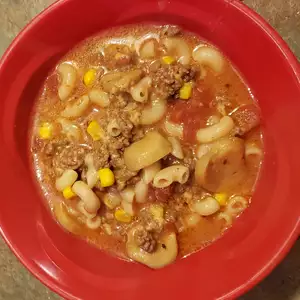

Classic Goulash

Description
For slow cooker, preheat a slow cooker set on High heat.
Make recipe through
Step 1; place the ground beef-onion mixture into the preheated slow cooker.
Stir in water, tomato sauce, diced tomatoes, soy sauce, Italian seasoning,
bay leaves, seasoned salt, and macaroni until thoroughly combined.
Cook on High for 1 hour.
Ingredients
- 2 pounds lean ground beef
- 2 large yellow onions, chopped
- 3 cloves garlic, chopped
Steps
- Cook and stir the ground beef in a large Dutch oven over medium-high heat, breaking the meat up as it cooks, until the meat is no longer pink and has started to brown, about 10 minutes. Skim off excess fat, and stir in the onions and garlic. Cook and stir the meat mixture until the onions are translucent, about 10 more minutes.
- Stir water, tomato sauce, diced tomatoes, soy sauce, Italian seasoning, bay leaves, and seasoned salt into the meat mixture and bring to a boil over medium heat. Reduce heat to low, cover, and simmer 20 minutes, stirring occasionally.
- Stir macaroni into the mixture, cover, and simmer over low heat until the pasta is tender, about 25 minutes, stirring occasionally. Remove from heat, discard bay leaves, and serve.